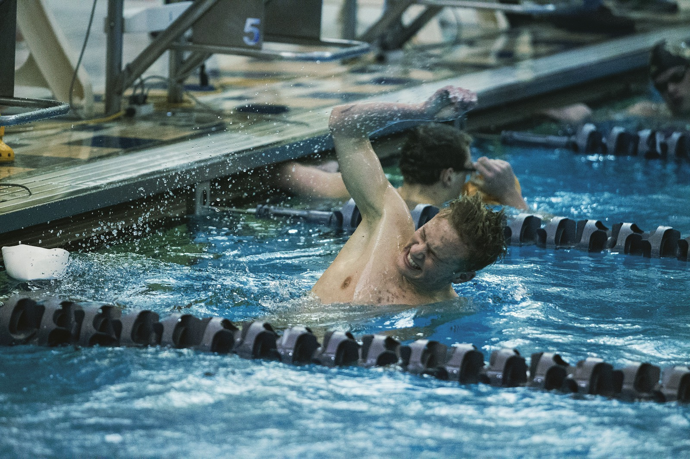
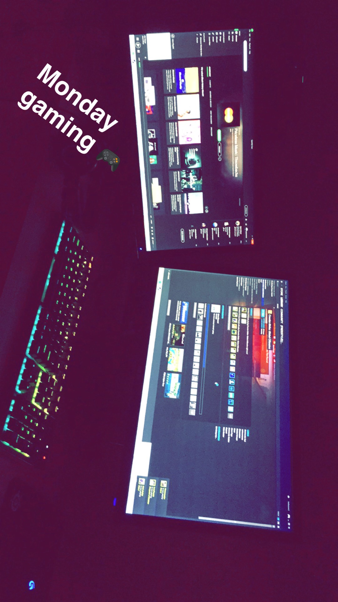
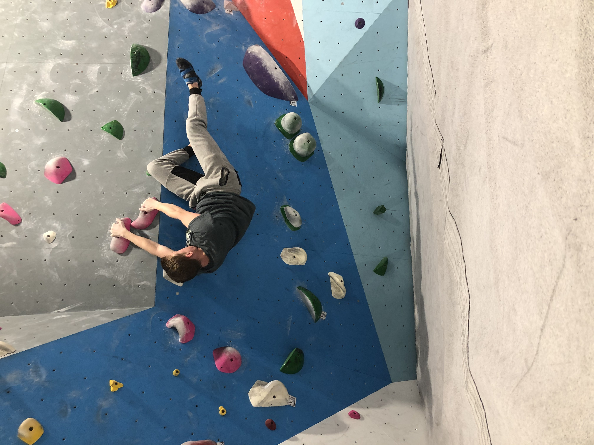

Karsen Diepholz

Background
Hi! I am a BS Computer Science student while also enrolled in Air Force ROTC. My current plans are to graduate and commission in May of 2020, and move to Pensacola, Florida, where I will be trained as a Combat Systems Operator (CSO). The primary role of a CSO is 3 parts. There is a Weapon Systems Operator (WSO), Electronic Warfare Officer (EWO), and a Navigator. While I could be trained in any of the three, some aircraft have all three.
My Illinois Institute of Technology experience has been amazing. I joined Alpha Sigma Phi as a Freshman and met some great people. I also was on the Swim Team for 2 years, where I broke 2 records.
My Hobbies

One of my main hobbies is swimming. I have been swimming since I was four years old, and since then, have attended numerous national meets and qualified for olympic trials. Swimming has been a big part of my life, and I have met some of my closest friends through this sport.
Video games are another one of my main hobbies. I have played video games since I was very young, and it has been a big part of my life. I have attended a number of gaming tournaments for video games, specifically Counter Strike and League of Legends.

Recently, climbing has been another one of my hobbies. There are two types of climbing that I do, bouldering and top rope. Bouldering is short, technical climbs which typically are less than 15 feet and you do not wear a harness or rope. Top rope is what people typically associate with climbing. It is much higher climbing which is more focused on endurance rather than power. In top rope, you have a harness and are tied in. Climbing has brought me great friends, even if it has not been long.
Thank you for visiting my website! I hope I could give you some insight into my life!